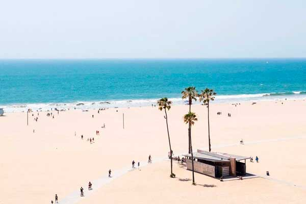
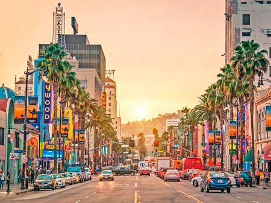
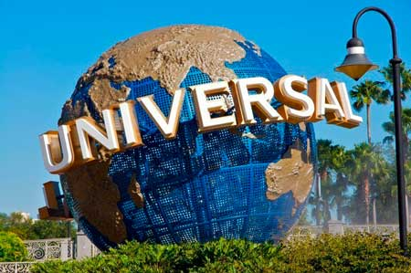

Actividades recomendadas
La ciudad de Los Ángeles es conocida por sus legendarias playas y la diversidad de parques temáticos, centros de ocio y actividades para realizar tanto solo, con amigos o en familia, sin dudas es un excelente lugar para vacacionar y en el que no tendrás tiempo de aburrirte. A continuación te explicaremos con mas detalles algunas de TANTAS actividades que tendrás para hacer en la increíble metrópoli.
Playas
En Los Ángeles descubrirás que cada día es idóneo para ir a las playas de la ciudad y disfrutar de ellas. Su tranquilidad, belleza y buen clima hacen de la costa angelina un lugar encantador. Entre las más famosas está Venice Beach, en la cuál podrás observar icónicos espectáculos callejeros de los que han terminado saliendo en programas televisivos.
Hollywood
Viajar a Los Ángeles es sinónimo de visitar Hollywood. Su conocida industria cinematográfica hace que este distrito sea el gran atractivo turístico de la metrópoli. ¿Has oído hablar del paseo de la fama? En "Walk of Fame" podrás caminar sobre las huellas de los personajes más famosos de Hollywood. Además, el vecindario ofrece todo tipo de tours y actividades para que te empapes del barrio más famoso de L.A: Hollywood.
Parques temáticos
Tanto si viajas con niños como si no, pasar un día en los parques temáticos de Los Ángeles es una actividad imprescindible. El más conocido y famoso de todos es Universal Studios el cual cuenta con emocionantes atracciones, espectáculos temáticos, recorre un auténtico estudio de cine y visita las tiendas, restaurantes y cines de LA en CityWalk.
Getty Center
Ubicado en la cima de las colinas de Brentwood, el Getty Center es un impresionante museo conocido tanto por su diseño arquitectónico como por su colección de arte. Alberga algunas de las mejores obras del mundo: pinturas renacentistas, fotografía, esculturas barrocas, manuscritos históricos y mucho más dentro de un extenso y moderno campus en medio de las montañas de Santa Mónica. El museo también ofrece vistas espectaculares de Los Ángeles si el cielo está despejado. También se puede hacer una visita guiada, que te permitirá conocer partes interesantes del museo difíciles de encontrar por cuenta propia.
Observatorio Griffith
Aquí encontrarás un mirador situado encima de una colina en la zona sur de Hollywood que te permitirá ver la increíble y vasta extensión de la ciudad de Los Ángeles. Al ser una gran zona verde y tranquila, es frecuente encontrarse con familias residentes de Los Ángeles que van a pasar el día allí. También podrás visitar el Planetario Samuel Oschin y sacar una buena foto del famoso letrero de Hollywood
¿Qué comer en Los Ángeles?
Aunque parezca que Estados Unidos no tenga una comida propia, la realidad es que cada estado tiene sus platos típicos. La influencia de la gastronomía mexicana en Los Ángeles ha sido de gran importancia, sin embargo, la ventaja de esta ciudad es que es una de las más multiculturales del mundo. A continuación te mostraremos 3 de los mejores restaurantes de LA:
The Factory Kitchen
Está situado en Arts District de Los Ángeles y ofrece una cocina tradicional italiana. Angelo Auriana, el chef del restaurante, afirma que para él la principal regla básica es cocinar solo con productos frescos. Algunos de sus mejores platos son las pastas caseras, las focacinas (brioches) y la auténtica cocina trattoria (típico restaurante italiano). Ubicación: 1300 Factory Pl Ste 101, Los Ángeles.
Bestia Restaurant
También situado en Arts District, este restaurante es muy cosmopolita y moderno tanto en su decoración como en su comida. Te conviene reservar una mesa con semanas de antelación ya que es un sitio muy concurrido y de moda actualmente. Cabe decir que su comida de estilo mediterráneo está elaborada muy cuidadosamente con tal de ofrecer un plato delicioso. Ubicación: 2121 E 7th Pl. Los Ángeles
Watter Grill
Aquí podrás probar una comida contemporánea deliciosa. Ubicado en el Downtown, su cocina alberga todo tipo de productos, desde un marisco y pescado excepcional hasta diferentes carnes acompañadas de distinguidos vinos. Ubicación: 544 S. Grand Ave, Downtown Los Ángeles